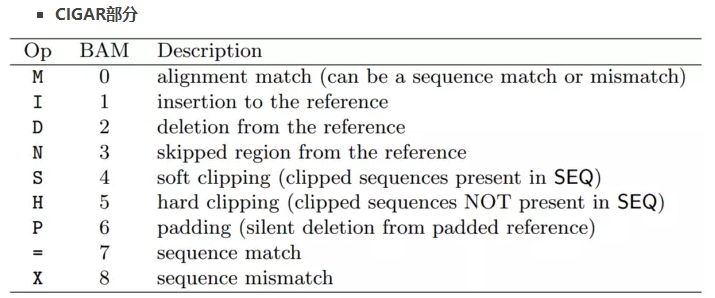

Samtools常用命令详解：
常用命令示例：
1）bam提取：
samtools view recaled.bam 1:1-1000000 -o tmp.bam
2）bam2fq：
samtools fastq -1 xx_1.fq -2 xx_2.fq -s xx_unpair.fq E11ND_chr1.bam
2）详细参数
http://www.htslib.org/doc/samtools.html
1.samtools view 2
2. samtools sort 4
3. samtools merge 5
4. samtools index 6
5. samtools faidx 7
6. samtools tview 8
7. samtools flagstat 9
8. samtools depth 10
9. samtools mpileup 11
10. samtools rmdup 13
11. samtools reheader 14
12. samtools cat 15
13. sam格式详解 16
14.SAM ALIGNMENT FORMAT 17
1．samtools view
view命令的主要功能是： sam文件与bam文件的相互转化。
bam文件优点：1). bam文件为二进制文件，占用的磁盘空间比sam文本文件小；2). 利用bam二进制文件的运算速度快。
Usage: samtools view [options] <in.bam>|<in.sam> [region1 ...]
Options:
-b 默认下输出是 SAM 格式文件，该参数设置输出 BAM 格式。
-h 默认输出sam文件不带 header，该参数设定输出sam文件时带 header 信息。
-H 只输出header。
-S 指定输入是 SAM 文件。
-u 该参数的使用需要有-b参数，能节约时间，但是需要更多磁盘空间。
-c 只输出匹配个数，不输出详细的比对信息。
-1 该参数的使用需要有-b参数，快速压缩。
-x 以16进制格式输出flag。
-X 以2进制格式输出flag。
-L 输入bed文件。
-t 需要有-S参数，列出比对参考序列的名称与长度大小。
-T 需要有-S参数，reference sequence file？？？
-o 指定输出文件。
-R 列出所有输出文件中的reads。
-f flag过滤，提取参数对应结果，默认值为0。
-F flag过滤，过滤参数对应结果，默认值为0。
-q 最小比对质量过滤，默认值为0。
-l 只输出reads以library格式？？？？？
-r 只输出reads以group格式？？？？？
[region1 ...] 指定输出类型，如指定NC_000001.10：1-1000 则只输出NC_000001.10:1-1000区间的比对结果。
示例：
#将sam文件转换成bam文件
$ samtools view -bS abc.sam > abc.bam
$ samtools view -b -S abc.sam -o abc.bam
#过滤未比对到参考序列上的比对结果
$ samtools view -bF 4 abc.bam > abc.F.bam
#过滤paired reads中两条reads都未比对到参考序列上的比对结果
$ samtools view -bF 12 abc.bam > abc.F12.bam
#提取没有比对到参考序列上的比对结果
$ samtools view -bf 4 abc.bam > abc.f.bam
#提取bam文件中比对到caffold1上的比对结果，并保存到sam文件格式
$ samtools view abc.bam scaffold1 > scaffold1.sam
#提取scaffold1上能比对到30k到100k区域的比对结果
$ samtools view abc.bam scaffold1:30000-100000 > scaffold1_30k-100k.sam
#根据fasta文件，将 header 加入到 sam 或 bam 文件中
$ samtools view -T genome.fasta -h scaffold1.sam > scaffold1.h.sam
2. samtools sort
sort命令的主要功能是：对bam文件进行排序。
Usage: samtools sort [options] <in.bam> <out.prefix>
-n 设定排序方式按short reads的ID排序。默认按序列在fasta文件中的顺序排序。
-f 指定输出out.prefix为全名，而非前缀名。
-o 指定输出。
-l 指定压缩级别，【0-9】。
-@ 指定运行线程数，多线程运行，提高效率。
-m 指定每个线程的最大使用内存，仅支持K，M，G等缩写，如768M等。默认500M。
例子：
$ samtools sort abc.bam abc.sort
3. samtools merge
merge命令的主要功能是：将2个或2个以上的已经sort了的bam文件融合成一个bam文件。融合后的文件不需要则是已经sort过了的。
Usage: samtools merge [-nr] [-h inh.sam] <out.bam> <in1.bam> <in2.bam>[...]
Options:
-n 设定排序方式按short reads的ID排序。默认按序列在fasta文件中的顺序排序。
-r attach RG tag (inferred from file names)。
-u 指定sam输出。
-f 如果存在输出文件，则覆盖之。
-1 压缩级别1。
-l 指定压缩级别，【0-9】。
-@ 指定运行线程数，多线程运行，提高效率。
-R 指定文件合并区间，默认为全部合并。
-h 复制 [-h inh.sam]文件中的header至输出文件。
4. samtools index
index命令的主要功能是：建立索引后将产生后缀为.bai的文件，用于快速的随机处理。很多情况下需要有bai文件的存在，特别是显示序列比对情况下。必须对bam文件进行默认情况下的排序后，才能进行index。否则会报错。
Usage: samtools index <in.bam> [out.index]
例子：
#以下两种命令结果一样
$ samtools index abc.sort.bam
$ samtools index abc.sort.bam abc.sort.bam.bai
5. samtools faidx
faidx命令的主要功能是：对fasta文件建立索引,生成的索引文件以.fai后缀结尾。该命令也能依据索引文件快速提取fasta文件中的某一条（子）序列。
Usage: samtools faidx <in.fasta> [<reg> [...]]
例子：
$ samtools faidx genome.fasta
#生成了索引文件genome.fasta.fai,是一个文本文件，分成了5列。第一列是子序列的名称；第二列是子序列的长度；个人认为“第三列是序列所在的位置”，因为该数字从上往下逐渐变大，最后的数字是genome.fasta文件的大小；第4和5列不知是啥意思。于是通过此文件，可以定位子序列在fasta文件在磁盘上的存放位置，直接快速调出子序列。
#由于有索引文件，可以使用以下命令很快从基因组中提取到fasta格式的子序列
$ samtools faidx genome.fasta scffold_10 > scaffold_10.fasta
此功能与bedtools getfasta 相似。
samtools faidx human.genome.fasta NC_000001.10:10001-25001 >test.fa
bedtools getfasta -fi human.genome.fasta -bed NC_000001.10:10001-25001 -fo test2.fa
6. samtools tview
tview命令的主要功能:直观地显示reads比对基因组的情况，和基因组浏览器有点类似。
Usage: samtools tview <aln.bam> [ref.fasta]
当给出参考基因组的时候，会在第一排显示参考基因组的序列，否则，第一排全用N表示。
按下 g ，则提示输入要到达基因组的某一个位点。例子“NC_000001:1000"表示到达第1号染色体的第1000个碱基位点处。
使用H(左）J（上）K（下）L（右）移动显示界面。大写字母移动快，小写字母移动慢。使用空格建向左快速移动（和 L 类似），使用Backspace键向左快速移动（和 H 类似）。Ctrl+H 向左移动1kb碱基距离； Ctrl+L 向右移动1kb碱基距离。
使用点号'.'切换显示碱基和点号；使用r切换显示read name等还有很多其它的使用说明，具体按 ？ 键来查看。
‘c’切换颜色，标注比对质量，碱基质量，核苷酸等。30～40的碱基质量或比对质量使用白色表示；20～30黄色；10～20绿色；0～10蓝色。
7. samtools flagstat
flagstat命令的主要功能: 统计BAM文件的比对结果。
Usage: samtools flagstat <in.bam>
示例：
$ samtools flagstat example.bam
结果说明：
11945742 + 0 in total (QC-passed reads + QC-failed reads) #总共的reads数
0 + 0 duplicates #dup数量
7536364 + 0 mapped (63.09%:-nan%) #总体上reads的匹配率
11945742 + 0 paired in sequencing #有多少reads是属于paired reads
5972871 + 0 read1 #reads1中的reads数
5972871 + 0 read2 #reads2中的reads数
6412042 + 0 properly paired (53.68%:-nan%) #完美匹配的reads数
6899708 + 0 with itself and mate mapped #paired reads中两条都比对到参考序列上的reads数
636656 + 0 singletons (5.33%:-nan%) #单独一条匹配到参考序列上的reads数，和上一个相加，则是总的匹配上的reads数。
469868 + 0 with mate mapped to a different chr #paired reads中两条分别比对到两条不同的参考序列的reads数
243047 + 0 with mate mapped to a different chr (mapQ>=5) #同上一个，只是其中比对质量>=5的reads的数量
8. samtools depth
depth命令的主要功能：得到每个碱基位点的测序深度,并输出到标准输出。
Usage: samtools depth [options] in1.bam [in2.bam [...]]
Options:
-b 输入碱基位点Bed文件。
-f 输入bam文件。
-l 设置最小长度。
-q 设置最小碱基质量。
-Q 设置最小比对质量。
-r 指定比对区域。
9. samtools mpileup
mpileup命令的主要功能：call SNP和INDEL并生成bcf文件，再使用bcftools进行SNP和Indel的分析。bcftools是samtool中附带的软件，在samtools的安装文件夹中可以找到。
Usage: samtools mpileup [options] in1.bam [in2.bam [...]]
Options:
输入参数设置：
-A 计算异常的pair read 数量。
-b 输入bam文件。
-C 校正碱基比对质量。
-d 指定比对时内存占用，default 250。
-f 输入已建立索引的fa文件。
-G 不输出reads name信息。
-l 输入bed文件，对其指定区间进行calling。
-M 标记比对质量，默认60。
-Q 过滤碱基质量小于参数的SNP，默认13。
-q 过滤比对质量小于参数的read，默认0。
--rf 提取与flag信息相同的reads，进行比对。
-ff 过滤与flag信息相同的reads，进行比对。
输出参数设置：
-D 以bcf格式输出SNP DP（与-g -u 同用）。
-g 以bcf格式输出比对文件。
-O 输出每个SNP在reads上的位置信息（不能与-g -u 同用）。
-s 输出比对质量（不能与-g -u 同用）。
-S 输出序列正负偏好p值（与-g -u 同用）。
-u 以vcf格式输出。
SNP/INDEL 筛选参数（与-g -u 同用）：
-e 错误率筛选参数 【20】。
-F INDEL最小缺口比例值【0.002】。
-h 聚类误差系数【100】。
-I 不进行INDEL calling。
-L INDEL calling 时最大深度设置【250】。
-m 支持INDEL的最小read数量。
-o ？？？？
-p 使用-m和-F增加敏感性。
-P 就逗号分割共有INDEL。
Bcf格式解析：
scaffold_1 2841 A 11 ,,,...,.... BHIGDGIJ?FF
scaffold_1 2845 G 11 ,,...,..... F656666166*
scaffold_1 2846 A 11 ,,...,..... (1.1111)11*
scaffold_1 2847 A 11 ,,+9acggtgaag.+9ACGGTGAAT.+9ACGGTGAAG.+9ACGGTGAAG,+9acggtgaag.+9ACGGTGAAG.+9ACGGTGAAG.+9ACGGTGAAG.+9ACGGTGAAG %.+....-..)
scaffold_1 2848 N 11 agGGGgGGGGG !!$!!!!!!!!
scaffold_1 2849 A 11 c$,...,..... !0000000000
scaffold_1 2850 A 10 ,...,..... 353333333
mpileup生成的结果包含6行：参考序列名；位置；参考碱基；比对上的reads数；比对情况；比对上的碱基的质量。其中第5列比较复杂,解释如下：
1 ‘.’代表与参考序列正链匹配。
2 ‘,’代表与参考序列负链匹配。
3 ‘ATCGN’代表在正链上的不匹配。
4 ‘atcgn’代表在负链上的不匹配。
5 ‘*’代表模糊碱基
6 ‘^’代表匹配的碱基是一个read的开始；’^'后面紧跟的ascii码减去33代表比对质量；这两个符号修饰的是后面的碱基，其后紧跟的碱基(.,ATCGatcgNn)代表该read的第一个碱基。
7 ‘$’代表一个read的结束，该符号修饰的是其前面的碱基。
8 正则式’\+[0-9]+[ACGTNacgtn]+’代表在该位点后插入的碱基；比如上例中在scaffold_1的2847后插入了9个长度的碱基acggtgaag。表明此处极可能是indel。
9 正则式’-[0-9]+[ACGTNacgtn]+’代表在该位点后缺失的碱基；
10. samtools rmdup
rmdup命令的主要功能：NGS上机测序前需要进行PCR，使一个模板扩增出一簇，从而在上机测序的时候表现出为1个点，即一个reads。若一个模板扩增出了多簇，结果得到了多个reads，这些reads的坐标(coordinates)是相近的。在进行了reads比对后需要将这些由PCR duplicates获得的reads去掉，并只保留最高比对质量的read。使用rmdup命令即可完成.
Usage: samtools rmdup [-sS]
Options:
-s 只对single-end reads进行处理。默认情况下，只对paired-end reads处理。
-S 将Paired-end reads作为single-end reads处理，需要同-s一起使用。
$ samtools rmdup input.sorted.bam output.bam
11. samtools reheader
Usage: samtools reheader <in.header.sam> <in.bam>
示例：
$ samtools reheader <in.header.sam> <in.bam>
12. samtools cat
Usage: samtools cat [-h header.sam] [-o out.bam] <in1.bam> <in2.bam> [...]
Samtools cat 与samtools merge的不同之处在于，Samtools cat只是简单的文件合并，不会进行sort排序
13. sam格式详解
SAM(Sequence Alignment/Map)格式是一种通用的比对格式，用来存储reads到参考序列的比对信息。
行、列、注释说明：
注释：以@开头的行
行：除注释外，每一行是一个read
第一列：read name，read的名字通常包括测序平台等信息。
第二列：sum of flags，为flag的总和（整数），2进制数字。
第三列：RNAM，reference sequence name，实际上就是比对到参考序列上的染色体号。
第四列：position，read比对到参考序列上，第一个碱基所在的位置。
第五列：Mapping quality，比对质量分数。
第六列：CIGAR值，碱基匹配上的碱基数。match、mismatch、insertion、deletion 对应字母 M、S、I、D。
第七列：MRNM(chr)，mate的reference sequence name，实际上就是mate比对到的染色体号。
第八列：mate position，mate比对到参考序列上的第一个碱基位置，若无mate,则为0。
第九列：ISIZE，Inferred fragment size.详见Illumina中paired end sequencing 和 mate pair sequencing，是负数，推测应该是两条read之间的间隔(待查证)，若无mate则为0。
第十列：Sequence，就是read的碱基序列，如果是比对到互补链上则对read进行了reverse completed。
第十一列：ASCII，read质量的ASCII编码。
第十二列之后：Optional fields，以tab建分割。
SAM ALIGNMENT FORMAT
The output of the ‘aln’ command is binary and designed for BWA use only. BWA outputs the final alignment in the SAM (Sequence Alignment/Map) format. Each line consists of:
Col | Field | Description |
1 | QNAME | Query (pair) NAME |
2 | FLAG | bitwise FLAG |
3 | RNAME | Reference sequence NAME |
4 | POS | 1-based leftmost POSition/coordinate of clipped sequence |
5 | MAPQ | MAPping Quality (Phred-scaled) |
6 | CIAGR | extended CIGAR string |
7 | MRNM | Mate Reference sequence NaMe (‘=’ if same as RNAME) |
8 | MPOS | 1-based Mate POSistion |
9 | ISIZE | Inferred insert SIZE |
10 | SEQ | query SEQuence on the same strand as the reference |
11 | QUAL | query QUALity (ASCII-33 gives the Phred base quality) |
12 | OPT | variable OPTional fields in the format TAG:VTYPE:VALUE |
Each bit in the FLAG field is defined as:
Chr | Flag | Description |
p | 0x0001 | the read is paired in sequencing |
P | 0x0002 | the read is mapped in a proper pair |
u | 0x0004 | the query sequence itself is unmapped |
U | 0x0008 | the mate is unmapped |
r | 0x0010 | strand of the query (1 for reverse) |
R | 0x0020 | strand of the mate |
1 | 0x0040 | the read is the first read in a pair |
2 | 0x0080 | the read is the second read in a pair |
s | 0x0100 | the alignment is not primary |
f | 0x0200 | QC failure |
d | 0x0400 | optical or PCR duplicate |
BWA generates the following optional fields. Tags starting with ‘X’ are specific to BWA.
Tag | Meaning |
NM | Edit distance |
MD | Mismatching positions/bases |
AS | Alignment score 比对打分 |
BC | Barcode sequence |
| AS:i:150 XS:i:150 单比对完全匹配，多比对完全匹配 |
X0 | Number of best hits |
X1 | Number of suboptimal hits found by BWA |
XN | Number of ambiguous bases in the referenece |
XM | Number of mismatches in the alignment |
XO | Number of gap opens |
XG | Number of gap extentions |
XT | Type: Unique/Repeat/N/Mate-sw |
XA | Alternative hits; format: (chr,pos,CIGAR,NM;)* |
| X0:i:10 表示有十个重复区域 |
| grep "XT:A:U" 表示唯一比对 |
XS | Suboptimal alignment score 多比对打分 |
XF | Support from forward/reverse alignment |
XE | Number of supporting seeds |
Note that XO and XG are generated by BWT search while the CIGAR string by Smith-Waterman alignment. These two tags may be inconsistent with the CIGAR string. This is not a bug.
flag包含信息：
|0x0001 (1)| the read is paired in sequencing |读段序列是成对的
|0x0002 (2)| the read is mapped in a proper pair |读段定位在适当位置
|0x0004 (4)| the query sequence itself is unmapped |读段序列自身没有定位
|0x0008 (8)| the mate is unmapped |与其配对的读段为定位
|0x0010 (16)| strand of the query (1 for reverse) |读段对应链
|0x0020 (32)| strand of the mate |配对链
|0x0040 (64)| the read is the first read in a pair |读段是读段对的第一个
|0x0080 (128)| the read is the second read in a pair |读段是读段对的第二个
|0x0100 (256)| the alignment is not primary |定位不是最优选
|0x0200 (512)| the read fails platform/vendor quality checks |读段质量未生成
|0x0400 (1024)| the read is either a PCR or an optical duplicate |读段是PCR或者光学重复
